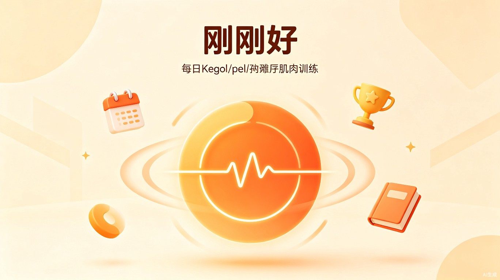

想解决什么问题：久坐人群普遍存在盆底肌松弛、痔疮频发等"难言之隐"，但提肛运动作为最简单的预防和改善方式，却因为枯燥、无引导、缺乏反馈而难以坚持。
为什么会想到做这个：身边同事普遍久坐，体检报告上痔疮、前列腺等问题年年出现。提肛运动医生都推荐，但没有一个好玩、轻量的工具让人坚持下来。市面上的App要么太医疗化，要么需要购买硬件设备，门槛太高。
产品形态：微信小程序，无需下载、无需注册、打开即用，用完即走。
| 人群类型 | 用户画像 | 每日训练量 |
|---|---|---|
| 日常养生 | 中老年、久坐办公族，关注日常保健和痔疮预防 | 60下，分3次完成 |
| 产后/痔疮养护 | 产后女性盆底修复、痔疮患者康复期 | 80-100下，循序渐进 |
| 男士专区 | 关注提升肌肉控制力和反应力的男性 | 60-100下，快慢结合 |
没有"刚刚好"之前，用户面临的问题：
• 不知道怎么练：网上教程参差不齐，收缩几秒、放松几秒没有标准答案
• 练着练着就忘了：没有引导和计时，做着做着就走神，不知道做了多少下
• 没有反馈没有动力：练了也不知道有没有效果，缺乏成就感和持续激励
• 现有工具太重：医疗类App需要注册购买硬件，使用门槛高，不够轻量
时间参数参考科普中国、湖南省职业病防治院等权威医疗机构的凯格尔运动指南，确保科学性。
| 模式 | 收缩 | 保持 | 放松 | 适合人群 |
|---|---|---|---|---|
| 慢收缩（耐力型） | 3-5秒（可调） | 2-5秒（可调，心脏脉冲动画） | 3-5秒（可调） | 初学者、产后修复、日常保健 |
| 快收缩（反应型） | 1秒 | - | 1秒 | 有基础者、男士专区 |
每完成一定次数，解锁对应的四字成语评价。幽默感是让用户坚持打卡的关键设计。
以下是4个核心页面的界面原型，已实现为可运行的微信小程序。
提肛运动本身不复杂，但"什么时候练、练多少、怎么算标准"是大多数人放弃的原因。刚刚好用圆环动画把抽象的收缩-放松可视化，用倒计时把"还要练多久"具象化，用成语评价把"练了有什么用"变成即时反馈。用户从"知道该练"到"实际练了"的转化率大幅提升。
痔疮、盆底肌松弛、前列腺问题——这些"说不出口"的健康困扰影响数亿人，但大多数人选择忍受而非主动改善。刚刚好用诙谐的成语（"大菊已定""菊气逼人"）消解了话题的尴尬感，用轻量小程序降低了行动门槛，让更多人愿意主动关注和改善盆底健康。这不是一个医疗产品，而是一个让健康习惯变得有趣的日常工具。
Canvas 圆环动画：使用微信小程序 Canvas 2D API 实现圆环的收缩-保持-放松三阶段动画。收缩阶段圆环匀速缩小，保持阶段叠加正弦波实现心脏脉冲效果，放松阶段匀速放大。动画帧使用 setTimeout(16ms) 模拟 60fps，兼容小程序环境（不支持 requestAnimationFrame）。
时间参数科学化：收缩/保持/放松时间均可调，范围参考科普中国、湖南省职业病防治院等权威医疗机构的凯格尔运动指南。慢收缩训练I型慢肌纤维（耐力），快收缩训练II型快肌纤维（爆发力）。
纯本地存储：使用 wx.setStorageSync 存储用户训练数据、成就解锁、昵称等信息，零后端依赖，数据完全私有，符合健康类应用的隐私需求。
Trae Work 全程辅助：从PRD撰写、原型设计、代码生成到Bug修复，全程使用 Trae Work 完成。包括需求分析、HTML文档生成、微信小程序代码编写、问题排查（requestAnimationFrame 兼容、?? 运算符兼容、页面json缺失等）。